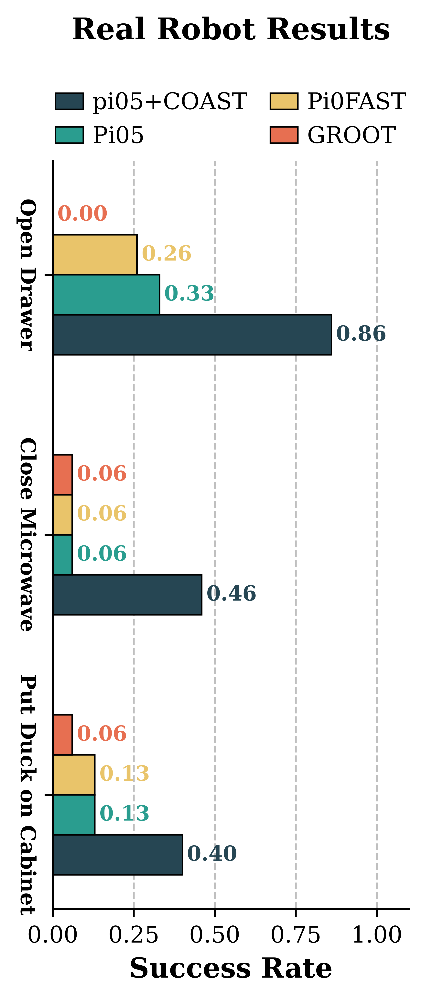

Contrastive Conceptor Activation Steering (COAST)
Unlocking Vision-Language-Action Models through Hidden States
Real-Robot Rollouts: \(\pi_{0.5}\) Before and After Steering
Pick a task to compare the frozen \(\pi_{0.5}\)-DROID policy’s own rollout with the same policy steered by COAST. The conceptor for each task is fit from the 15 base-policy trials; nothing else changes between the two clips. Below each comparison are all successful steered trials from the 15-trial evaluation. Clips show the two external ZED cameras and the wrist camera side by side and are played at 2× speed.
All successful \(\pi_{0.5}\)+COAST trials 13 videos · 13 of 15 trials succeeded
All successful \(\pi_{0.5}\)+COAST trials 7 videos · 7 of 15 trials succeeded
All successful \(\pi_{0.5}\)+COAST trials 5 videos · 6 of 15 trials succeeded (video recording failed for one success)
Clips are unedited rollouts from the 15-trial evaluation, played at 2× speed. Full protocol, per-task hyperparameters, and confidence intervals are in the Real-Robot Results section.

Abstract
Vision-Language-Action (VLA) models leverage powerful perceptual priors from web-scale Vision-Language Model (VLM) pre-training, yet they remain surprisingly brittle in practice, frequently failing at simple robotic tasks. To mitigate this, we propose Contrastive Conceptor Activation Steering (COAST).
COAST builds on the notion of a “conceptor”, a linear operator that soft-projects data into the principal components of a target distribution. COAST uses conceptors to identify success-critical subspaces for a target robotic task from a few examples of success and failure rollouts. At inference time, it steers VLA latents into these identified success subspaces to improve task outcomes. Across three architecturally distinct neural policies (flow-matching VLA, autoregressive VLA, and Diffusion Policy), COAST improves absolute mean simulation and real-robot task success rate by over 20 and 40% respectively. The activation subspace geometry reveals that failure modes share substantial structure across tasks while success representations remain largely task-specific. When tasks share similar failure modes, this structure enables previously fitted conceptors to improve performance on new tasks without refitting. Ultimately, our results suggest that current VLAs retain substantial task-relevant knowledge in their latent representations, and that the action expert’s decoding bottleneck could be mitigated by steering its residual stream toward task-relevant subspaces. COAST provides a lightweight, training-free path to unlocking these latent capabilities by steering the model towards its own “success” distributions.
Method
A VLA’s hidden states during task execution contain both task-critical and task-irrelevant features. When comparing successes and failures, the irrelevant features remain largely unchanged and exhibit low variance, while task-relevant, outcome-critical states manifest high variance. Conceptors are well suited to this setting: they capture the highly variable, discriminative directions and suppress shared low-variance noise.
Conceptors as variance-adaptive filters
Given mean-centered activations \(\tilde{X} \in \mathbb{R}^{N \times d}\), a conceptor \(C\) is the positive semi-definite operator minimizing a regularized reconstruction objective with aperture \(\alpha\):
If the covariance \(R\) has eigenvalues \(\lambda_i\), the conceptor has eigenvalues \(\mu_i = \lambda_i / (\lambda_i + \alpha^{-2})\). High-variance directions pass through nearly unchanged (\(\mu_i \approx 1\)); low-variance directions are suppressed toward zero. Crucially, \(C\) is computed directly by matrix multiplication and inversion, with no gradient descent.
Contrastive conceptors via Boolean subspace algebra
Separate conceptors \(C_{\text{success}}\) and \(C_{\text{failure}}\) are fit on success and failure samples, then composed using the soft Boolean algebra of conceptors:
The AND-NOT operation retains directions present in the success subspace and absent from the failure subspace. Shared directions, which carry outcome-irrelevant computation, are suppressed. What remains is the thin residual subspace that differentiates the two outcomes.
Multiplicative gating at inference
At inference time, each residual activation \(h\) of the action expert at layer \(\ell\) is replaced before continuing through the remaining frozen layers:
Interpolating with the identity makes the gate a soft projection: at \(\beta = 0\) the forward pass is unmodified, at \(\beta = 1\) the full conceptor is applied. Because \(M\) has eigenvalues in \([0,1]\), it can only attenuate directions of the residual stream and never amplifies activations.
The full recipe
- Collect rollouts. Run the frozen policy for 15 ordinary evaluation episodes on the target task and label each as success or failure.
- Extract activations. Record the action expert’s residual stream at a single layer \(\ell\), mean-pooled over the expert’s suffix tokens, giving one vector per denoising or autoregressive step.
- Fit conceptors in closed form. Compute \(C_{\text{success}}\) and \(C_{\text{failure}}\); each fit takes under a second on a CPU.
- Compose. Form \(C_{\text{steer}} = C_{\text{success}} \wedge \neg C_{\text{failure}}\).
- Steer. Gate the residual stream with \(M\) at every inference call. Overhead matches any hook-based additive steering method.
We evaluate three variants. Global steering fits one contrastive conceptor from activations pooled across all denoising steps. Per-step steering fits a separate conceptor for each denoising step, tracking shifts in the discriminative subspace as the action is refined from noise. Positive-only steering uses \(C_{\text{success}}\) alone, requiring only successful rollouts. A geometric hyperparameter heuristic (layer via conceptor quota, aperture range via success-failure overlap) recovers 93% of oracle performance while evaluating under 3–8% of the full configuration grid.
Experimental Setup

Policies
- \(\pi_{0.5}\) (flow-matching VLA): MetaWorld, LIBERO, RoboCasa, real robot
- \(\pi_0\)-FAST (autoregressive VLA): MetaWorld, LIBERO, real robot
- GR00T N1.5 (flow-matching VLA): RoboCasa, real robot
- Diffusion Policy (non-VLA diffusion baseline): RoboCasa
Protocol
- Strict train/test split: 15 fitting rollouts to build conceptors and choose hyperparameters, 30 held-out test rollouts with unseen environment configurations.
- Baselines: Contrastive Activation Addition (CAA), Sparse Autoencoder (SAE) steering, and LoRA supervised fine-tuning (SFT) on 30 on-policy rollouts per task, twice COAST’s fitting budget.
- Real robot: the released \(\pi_{0.5}\)-DROID checkpoint, not fine-tuned on any demonstrations of the evaluated tasks, 15 trials per task and condition.
Main Results
Across every model–benchmark pair, COAST produces statistically significant improvements over the unsteered policy, and the contrastive strategies (global and per-step) consistently outperform additive (CAA) and feature-based (SAE) steering as well as supervised fine-tuning. Gains are largest where the baseline is weakest.
| Benchmark | Policy | Base | +SFT | +SAE | +CAA | COAST Global | COAST Per-step | COAST Pos-only | Δ (best) |
|---|---|---|---|---|---|---|---|---|---|
| RoboCasa | \(\pi_{0.5}\) | 0.40 | 0.31 | 0.49 | 0.42 | 0.55 | 0.55 | 0.56 | +0.16 |
| RoboCasa | GR00T N1.5 | 0.59 | 0.50 | 0.69 | 0.62 | 0.75 | 0.71 | 0.73 | +0.16 |
| RoboCasa | Diffusion Policy | 0.32 | – | 0.42 | 0.36 | 0.45 | 0.46 | 0.39 | +0.14 |
| LIBERO-10 | \(\pi_{0.5}\) | 0.43 | 0.40 | 0.61 | 0.47 | 0.76 | 0.80 | 0.63 | +0.37 |
| LIBERO-10 | \(\pi_0\)-FAST † | 0.65 | 0.62 | 0.76 | 0.71 | 0.84 | 0.84 | 0.79 | +0.23 |
| MetaWorld ML45 | \(\pi_{0.5}\) | 0.69 | 0.53 | 0.77 | 0.79 | 0.94 | 0.94 | 0.81 | +0.25 |
| MetaWorld ML45 | \(\pi_0\)-FAST | 0.71 | 0.76 | 0.79 | 0.71 | 0.82 | 0.79 | 0.81 | +0.11 |
Mean success rate over tasks, each computed on 30 held-out test rollouts per task and condition. Bold marks the best method per row. Δ is the gain of the best COAST variant over the unsteered policy; all contrastive COAST gains are significant under a paired \(t\)-test across tasks (\(p<0.05\)). † One LIBERO task has zero failures under the \(\pi_0\)-FAST checkpoint, so that column’s mean and Δ are over the 9 contrastive-eligible tasks. Per-task results, \(p\)-values, and multiple-comparison corrections are in the paper.
Three patterns hold across all benchmarks and architectures
- Contrastive beats positive-only. Subtracting the failure subspace contributes meaningfully beyond projecting toward success.
- Per-step helps on long-horizon tasks. Per-step steering matches or exceeds global steering on LIBERO and RoboCasa but offers little extra on short-horizon MetaWorld, suggesting the discriminative subspace shifts during denoising mainly when multi-step reasoning is required.
- Gains scale inversely with baseline success. Tasks where the unsteered policy struggles most show the largest absolute improvements, e.g. LIBERO Mugs+Plates 0.07→0.60 and MetaWorld pick-place-wall 0.20→1.00 for \(\pi_{0.5}\).
SFT underperforms the base policy in five settings: fine-tuning on a strictly limited budget of 30 rollouts often overfits and degrades pre-trained robustness, and scaling SFT to 200 trajectories and 1,000 steps does not close the gap. CAA applies a strictly additive shift along a single direction, and SAE steering collapses selected features back into a single additive direction; neither performs the subspace-aware scaling that conceptors provide.
Real-Robot Results
We test on the DROID platform with the released \(\pi_{0.5}\)-DROID policy, which was not fine-tuned on any demonstrations of these tasks. The tasks have very different dynamics: opening, closing, and pick-and-place. Across the three main tasks, \(\pi_{0.5}\)+COAST achieves the highest success rate with a 40% average absolute improvement, and the largest gain on the challenging Open Drawer task. On Close Microwave, the success conceptor was fit from a single successful base-policy episode.
| Task | Fitting S/F | \(\pi_{0.5}\) [95% CI] | \(\pi_{0.5}\) + COAST [95% CI] | Gain |
|---|---|---|---|---|
| Open Drawer | 5/10 | 0.33 (5/15) [0.15, 0.58] | 0.86 (13/15) [0.62, 0.96] | +0.53 |
| Close Microwave | 1/14 | 0.07 (1/15) [0.01, 0.30] | 0.46 (7/15) [0.25, 0.70] | +0.39 |
| Put Duck in Cabinet | 2/13 | 0.13 (2/15) [0.04, 0.38] | 0.40 (6/15) [0.20, 0.64] | +0.27 |
| Place Banana on Plate | 5/10 | 0.33 (5/15) [0.15, 0.58] | 0.67 (10/15) [0.41, 0.85] | +0.34 |
15 trials per task and condition; brackets are Wilson 95% confidence intervals. “Fitting S/F” is the success/failure split of the 15 base-policy rollouts used to fit the conceptor. With 15 trials the intervals are wide, and base and COAST intervals are disjoint only for Open Drawer. The mean absolute gain is +0.40 over the three main tasks and +0.38 over all four. \(\pi_0\)-FAST and GR00T N1.5 reach at most 0.26 on any of the three main tasks.

Real-world evaluation: protocol, calibration data, and hyperparameters Extended appendix
We use the DROID robot setup, which consists of a 7-DoF Franka Emika Panda arm, a Robotiq 2F-85 parallel-jaw gripper, a wrist-mounted ZED Mini RGB-D camera, and two side-mounted ZED 2 stereo cameras. This setup enables the generalist \(\pi_{0.5}\)-DROID checkpoint to be run directly; the policy is the released checkpoint and is not fine-tuned on any demonstrations of the evaluated tasks. Activations are captured from the action expert’s residual stream at layers \(\{0, 5, 11, 17\}\) during every inference call.
Evaluation protocol
| Platform | DROID: 7-DoF Franka Emika Panda, Robotiq 2F-85 gripper, wrist ZED Mini and external ZED 2 |
| Policy | \(\pi_{0.5}\)-DROID, not fine-tuned on any demonstrations of these tasks |
| Control | Joint velocity and gripper position at 15 Hz |
| Action chunk | 10 actions × 8 dims (7 joint velocities + 1 gripper) |
| Open-loop horizon | 8 of 10 actions executed per replan (about 0.53 s) |
| Cameras to policy | 1 external ZED (left) + wrist, resized with padding to 224 × 224 |
| Activation capture | Residual stream at layers \(\{0, 5, 11, 17\}\); tensor of (10 denoising steps, 4 layers, 15 action tokens, \(d=1024\)) per inference call |
| Trials | 15 evaluation trials per task and condition; the 15 base-policy trials are also the fitting rollouts |
| Scene | Target-object placements kept as consistent as possible across trials and conditions |
Per-task calibration data and hyperparameters
For each task, the 15 base-policy trials serve both as the baseline measurement and as the fitting rollouts for COAST; no additional data collection is required. The table lists the language prompt, episode horizon, and the selected steering layer, aperture \(\alpha\), and strength \(\beta\) for every task. The success/failure split of the fitting rollouts is the “Fitting S/F” column above.
| Task | Layer | \(\alpha\) | \(\beta\) | Prompt | Max timesteps |
|---|---|---|---|---|---|
| Open Drawer | 5 | 5.0 | 0.2 | “open upper left drawer” | 700 |
| Close Microwave | 5 | 3.5 | 0.1 | “close the microwave door tightly” | 500 |
| Put Duck in Cabinet | 5 | 0.2 | 0.1 | “put duck on cabinet” | 200 |
| Place Banana on Plate | 5 | 5.0 | 0.1 | “place yellow banana on black plate” | 300 |
Fourth task and scope of the real-world evidence
In addition to the three tasks in the main text, we evaluate a fourth task, Place Banana on Plate, in which the robot must pick up a yellow banana from the middle shelf and place it onto a black plate on the table; this provides an object-placement configuration distinct from the original three tasks. On Close Microwave, the success conceptor is fit from a single successful base-policy episode.
This evaluation is deliberately reported with its limitations. It covers four tasks with 15 trials per condition in a single physical setup, and the confidence intervals are correspondingly wide: the base and COAST intervals are disjoint only for Open Drawer. The results should therefore be read as evidence that the simulation gains transfer to hardware on the evaluated tasks, not as an estimate of robustness across varied real-world scenes. All 15 COAST evaluation rollouts per task and the base-policy activations used for fitting are provided through an anonymized link in the supplementary material.
Why Does a Closed-Form Gate Work?
We identify three geometric facts about the action expert’s hidden states that explain the double-digit gains.
1. Outcome-relevant computation is low-rank, but not rank-one
Although the \(\pi_{0.5}\) residual stream is 1024-dimensional, the eigenvalue spectra of both success and failure conceptors decay sharply across all steered MetaWorld tasks. The Boolean contrastive operation cancels the dimensions shared by both outcomes, reducing the effective steering subspace to roughly one percent of the hidden dimension. Yet this subspace is strictly multi-dimensional: additive steering along a single mean-difference vector (CAA) recovers only partial gains.
2. Subspace overlap predicts steering efficacy
Per-task gain correlates strongly with the success–failure overlap (Spearman \(\rho = 0.59\), \(p = 0.002\)),
$$\mathrm{sim}(C^{+}, C^{-}) = \frac{\mathrm{tr}(C^{+}C^{-})}{\sqrt{\mathrm{tr}((C^{+})^2)\,\mathrm{tr}((C^{-})^2)}}.$$When the subspaces overlap heavily, the thin residual directions distinguishing them are exactly what AND-NOT isolates. Overlap needs only one matrix product and no rollouts, so it doubles as a cheap diagnostic of where steering will help most.

3. Steering reshapes the activation geometry toward success

The key observation is that steered centroids shift toward the baseline-success centroid and away from the baseline-failure centroid. Over trajectory time, steered successes consistently track the baseline-success mean, while steered failures either sustain a partial shift or revert to the baseline-failure trajectory. The physical outcome closely tracks which distribution the activations align with, confirming that these regions are linked to task execution rather than merely descriptive.
Tasks Share Failure Geometry, Enabling Cross-Task Steering
Success activations cluster tightly and uniformly across tasks, while failure activations spread into distinct, task-specific regions. Because the contrastive conceptor acts subtractively along failure directions, a conceptor fitted on one source task should also help a different target task whenever their failure subspaces overlap.

Transferred conceptors retain most of the gain of the self-fit configuration, and in several cases match or exceed it. On LIBERO, a conceptor fit on Mug+Micro lifts Cheese+Butter by +0.80, and on RoboCasa a Coffee Setup conceptor lifts Open Drawer by +0.60, both without any refitting on the target task. Shared failure structure, not shared success structure, drives these gains.
Limitations and Broader Impact
Limitations. Contrastive conceptors require both success and failure rollouts; uniformly successful tasks fall back to positive-only steering, which is safe but can be less effective. Tasks with nearly disjoint success and failure subspaces show smaller gains, as the overlap–efficacy relationship predicts. Whether the geometric hyperparameter selection generalizes beyond the architectures tested here remains open. The real-world evidence covers four tasks with 15 trials per condition in a single physical setup and should be read as evidence that simulation gains transfer to hardware, not as an estimate of robustness across varied scenes.
Broader impact. COAST lowers the cost of adapting frozen robot policies, replacing fine-tuning with a handful of rollouts and a closed-form computation. Because steering acts on internal activations, a steered policy is hard to distinguish from an unmodified one from action traces alone, and the same operator could be constructed to steer toward failure-aligned behavior. Two properties bound the intervention: the steering matrix has eigenvalues in \([0,1]\) and spectral norm at most one, so it can only attenuate and never amplify activations, and it is fully specified by a stored matrix that can be logged. We recommend that deployments log applied conceptors as part of the policy specification and pair activation steering with output-level monitoring and standard physical safeguards.